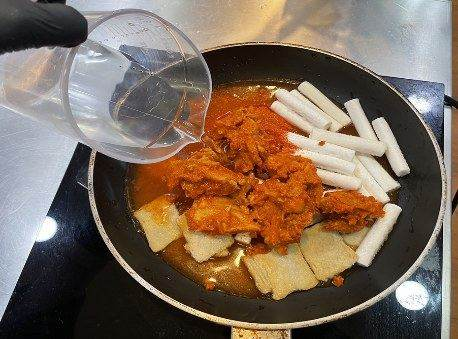
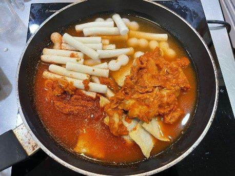
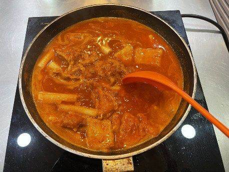
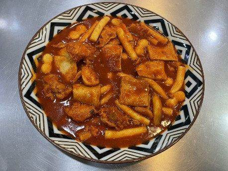
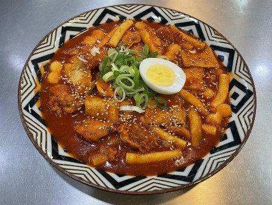
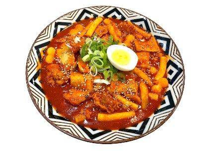

| 메뉴명 | 춘천 닭갈비떡볶이 |
|---|---|
| 판매가격 | 9,900원 |
| 원재료 | 만능닭불고기, 오리지널 떡볶이, 대파, 깨, 계란, 조랭이떡, 쌈무김치 |
| 사용 부자재 | 돈까스 접시, 소스볼 |
| 메뉴특징 | 진한 닭갈비 양념에 쫄깃한 떡까지, 계속 당기는 중독적인 맛 |
조리방법

1
냉동 아이센스 만능 닭불고기 제품의 실링 3면을 개봉한다.
(※완전히 뜯지 않기!)
냉동 아이센스 만능 닭불고기 제품의 실링 3면을 개봉한다.
(※완전히 뜯지 않기!)

3
오리지널 떡볶이 원팩, 조랭이떡 10개, 데운 만능닭불고기, 물 250g을 넣는다.
(*라면사리 추가 시 물 300g)
오리지널 떡볶이 원팩, 조랭이떡 10개, 데운 만능닭불고기, 물 250g을 넣는다.
(*라면사리 추가 시 물 300g)

4
인덕션 6에서 7분간 타이머를 맞춰 끓여준다.
인덕션 6에서 7분간 타이머를 맞춰 끓여준다.

5
떡이 늘러 붙을 수 있으므로 중간에 저어가며 끓여준다.
떡이 늘러 붙을 수 있으므로 중간에 저어가며 끓여준다.

6
타이머가 울리면 돈까스 접시에 떡볶이를 옮겨 담고, 닭고기가 위에 올라오게 집게로 정리해준다.
타이머가 울리면 돈까스 접시에 떡볶이를 옮겨 담고, 닭고기가 위에 올라오게 집게로 정리해준다.

7
삶은 계란 반개, 대파 20g, 깨 1g을 뿌린다.
삶은 계란 반개, 대파 20g, 깨 1g을 뿌린다.

8
소스볼에 쌈무김치 50g을 담아 함께 제공한다.
소스볼에 쌈무김치 50g을 담아 함께 제공한다.
※ 멘트 : 다 드신 후 소스에 ‘후식 김가루밥’을 추가해 비벼 드시면 맛있습니다!
라면사리 추가 시,
물 300g으로 변경하여 조리할 것!
(조리 시간 동일)